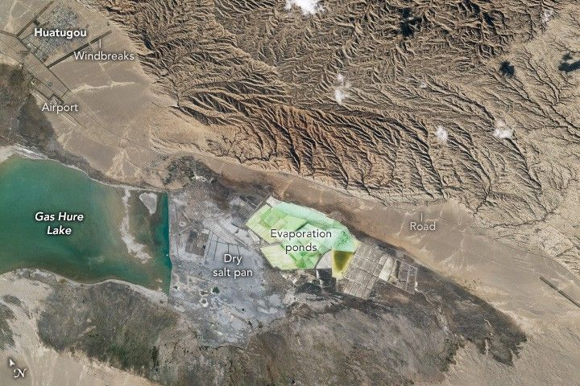

The Salty Lake of Gas Hure
An astronaut aboard the International Space Station captured this photograph of Gas Hure Lake (also known as Gasikule Lake) located in Qinghai, a northwestern Chinese province on the Tibetan Plateau. Angular evaporation ponds extend from the eastern side of the lake and include a dry salt pan that formed as water slowly evaporated. The dry pan provides an indication of the former extent of water in the lake.
Gas Hure Lake lies within the Qaidam Basin. Rainfall and snowmelt from surrounding mountain ranges provide water to the basin, but because it is a closed basin, the water has no way to flow out. Salt evaporation ponds—regionally called potash fields due to the potassium-rich salts and minerals in the lake—are shallow basins used to produce salt via evaporation.
Although not all salt lakes produce minerals, Gas Hure Lake’s brine contains high levels of lithium, potassium, magnesium, and boron. The salt in the lake comes from a combination of long-term evaporation, the dissolving of nearby salt-rich rocks (especially to the north), and mineral-rich underground water that rises through a fault beneath the lake. The vibrant green color of the salt ponds can vary depending on temperature, water levels, and the types of minerals and microorganisms present. The brines of Gas Hure Lake are used for both mineral and energy resource purposes.
The city of Huatugou, visible to the north of the lake, is outlined by straight lines of vegetation that form windbreaks. These carefully arranged belts of trees are designed to shield the town and its infrastructure from dust storms that arise in this desert region. Roads connect the city, the airport, and the lake’s industrial areas.